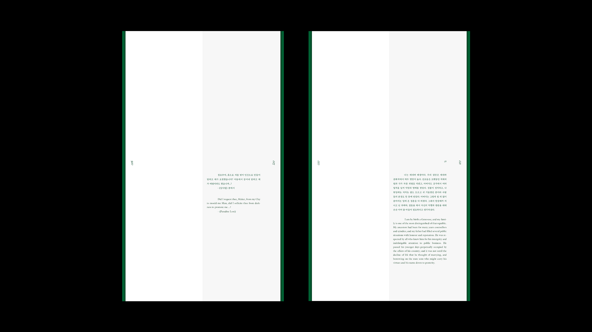
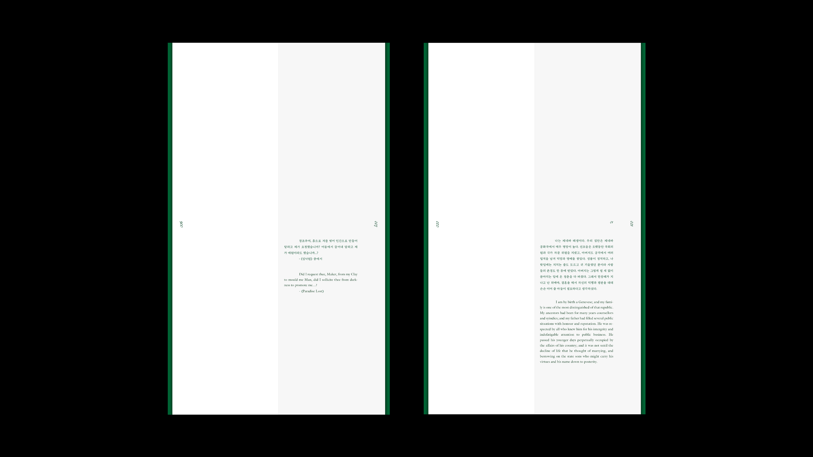

Title:Monster
Period: 2024.03 - 2024.06
Contribution: Personal Project • 100%
Tags:
Description:
100 × 350mm
119p
원작_프랑켄슈타인
작가_메리 셸리
그림_헨리 푸젤리
메리 셸리의 장편소설 <프랑켄슈타인>의 북디자인을 했다.
차가움, 무서움, 딱딱함이라는 키워드를 뽑아 새롭게 해석하며 "Monster"로 제목을 새롭게 지었으며, 만들어낸 괴물에 대한 무서움, 자신에 대한 괴로움, 실망, 후회에 집중하여 뱉어내는 말 한마디에 강조를 하거나 마커로 지워내는 방식으로 연출하였다.
작가 메리셸리의 부모와 가까운 관계였던, 헨리 푸젤리의 그림들을 2차 창작하였다.
책의 모든 분위기를 초록색으로 통일시켜 기괴한 분위기를 만들었다.
Monster 그 자체에 맞춰 다른 책들과 구분지어 판형도 세로로 긴 형태로 만들었다.
'Monster'의 컨셉에 맞춰 국문과 영문 모두 날카롭고 서늘한 느낌이 들도록 사용했는데, 기본체와 대화체를 분류하였고, 대화체에서 주인공을 벼랑으로 미는 요소들은 강조로, 주인공의 후회나 비겁함은 마커칠을 하였다.

 
